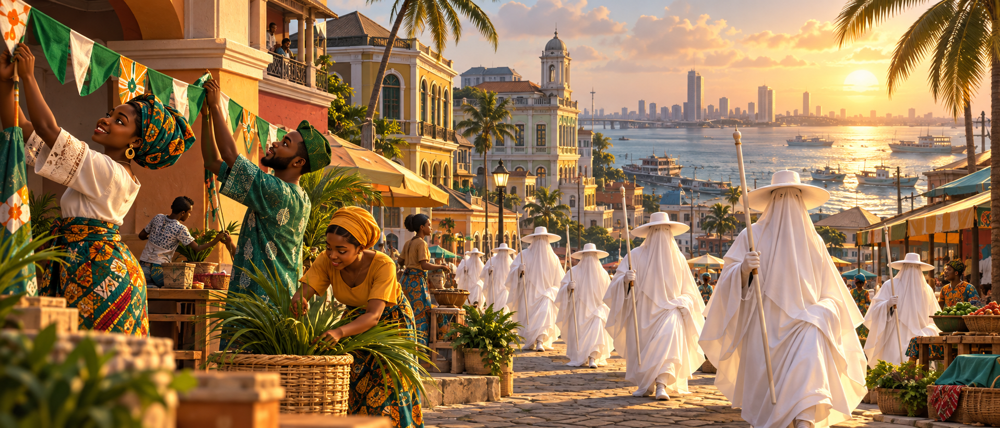
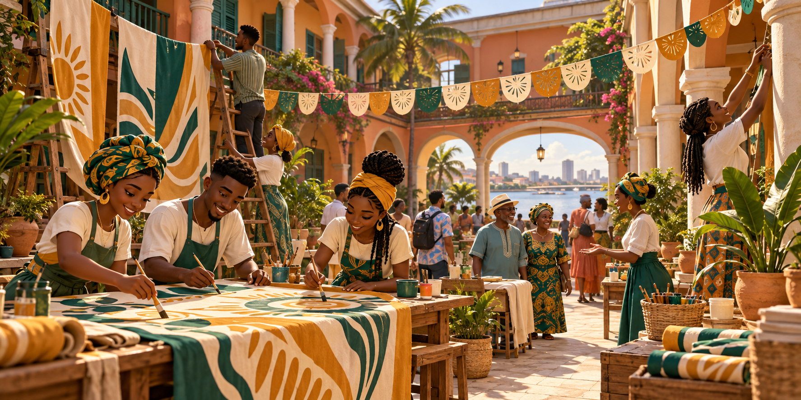

A CULTURAL ADVENTURE · PLAYABLE PROTOTYPE
A city of stories.
A spirit of togetherness.
Many Stories. One Lagos Spirit.
Become a festival volunteer. Meet your neighbours, prepare the streets, and bring a fictional community celebration to life.
Begin your adventure ↗
YOUR COMMUNITY NEEDS YOU
The road to celebration
DISCOVER • REMEMBER • SHARE
Your heritage journal
Complete neighbourhood tasks to collect story cards. Cultural notes below use the project brief and await custodian review.

MANY HANDS. A SHARED CELEBRATION.
Many Stories.
One Lagos Spirit.
Every banner, every welcome, every helping hand brings your neighbourhood closer to festival day.
Help your community ↗Culture at the heart.
This is an independent, fictional educational prototype. It does not represent traditional authorization or a recreation of sacred rites. The player is a volunteer; Eyo figures are portrayed as procession participants. Historical interpretation, Yoruba narration, and festival etiquette require review by Lagos cultural custodians.
Development roadmap: real online private rooms, computer companions, a full 3D world, reviewed Yoruba translations, and musician-recorded percussion. This version supports solo play with synthesized rhythm tones and device-local progress.